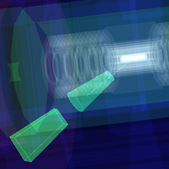
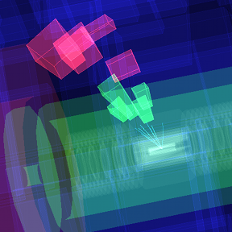
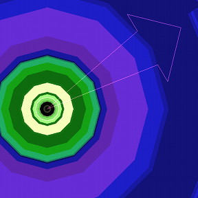

Detecting Particles
Different particles leave different signatures in the ATLAS subdetectors.
How ATLAS Detects Particles
ATLAS is one of the particle detector systems in the LHC. It is made of different layers which detect different types of particle. A new particle created in the high energy collision will travel out through the different layers of ATLAS, interacting with the detector as it passes. Different particles interact differently, and we use this difference to help us distinguish one type of particle from another.

Different particles in Collider
Electron

Electrons have a track and EM calorimeter energy deposit. Collider will draw a cone around recognised electrons.
Muon

Muons have a track extending from the Inner Detector to the Muon Spectrometer. Muons may leave small energy deposits in the calorimeter.
Jet

Jets contain multiple tracks leading to varying amounts of energy deposited in both calorimeters. Jets may be produced by quarks or gluons.
Neutrino

Neutrinos are not detected in ATLAS, though by looking for missing energy, we can infer when they are produced. Missing energy is shown as a pink arrow.